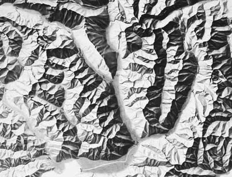

How to make a shaded relief in R
While trying to build a circular colour scale to plot angles and wind direction, I stumbled upon an easy way to make shaded reliefs in R. You known, when you look at cool maps of mountain areas where peaks and valleys are easily distinguishable from their shadows like this:

What I accidentally discovered is that one way of approximating this look is by taking the directional derivatives of height and then plotting the cosine of its angle from the sun. After some further research I learned that this is actually done in cartography and is called aspect-based shading. I also learned that it’s not the best method, and I’m itching to try others. But for now, let’s keep things simple and get stuff actually done.
Just as an example, I will be using our old friend, the volcano database. I will be also using data.table syntax because that how I roll. Deal with it, dplyr lovers 😎.
library(data.table)
library(ggplot2)
data(volcano)
volcano <- as.data.table(melt(volcano, varnames = c("x", "y"),
value.name = "h"))
So then I take the derivative (this is a function I made in my personal package, but bear with me 🙏) and take the angle. The minus sign are there… well, because it works –I’m not sure about the exact maths here.
volcano[, c("dx", "dy") := metR::Derivate(h ~ x + y)]
volcano[, angle := atan2(-dy, -dx)]
And with that, we can set the angle from which the Sun is shinning (usually from the top left) and with a little bit of code, we get an acceptable result.
sun.angle <- pi/3
ggplot(volcano, aes(x, y)) +
geom_raster(aes(fill = cos(angle + sun.angle)), alpha = 1, interpolate = TRUE) +
scale_fill_gradient2(low = "white", high = "white", mid = "gray20",
midpoint = sun.angle, guide = "none") +
coord_fixed() +
theme_void()

Excellent! 💜
But hey, don’t leave, there’s more. What if you want to use this gorgeous shading as a background to map other data? For example, let’s say you had surface temperature readings, or sulphur concentration data. Since our scale_fill is being taken by the shading and ggplot2 does not allow for more than one scale per aesthetic, you couldn’t use another geom_raster() to “paint” the data over this background.
One solution is to take the plot we made above, extract the raster grob (GRaphical OBject) and put it over another plot as an annotation. This is akin to a plot transplant and –just as organ transplants– it’s an ugly mess that will become a forgotten practice of a less civilized age once we master 3D printing of organs. But it works and is the best we’ve got so far.
shade <- ggplot(volcano, aes(x, y)) +
geom_raster(aes(fill = cos(angle + sun.angle)), alpha = 0.5, interpolate = TRUE) +
scale_fill_gradient2(low = "white", high = "white", mid = "black",
midpoint = sun.angle, guide = "none")
grob.shade <- ggplotGrob(shade)
grob.shade <- grob.shade$grobs[[6]]$children[[3]]
ggplot(volcano, aes(x, y)) +
geom_raster(aes(fill = h), alpha = 1, interpolate = TRUE) +
annotation_custom(grob = grob.shade) +
scale_fill_viridis_c(guide = "none", option = "A") +
coord_fixed() +
theme_void()

Lucky for us, at least for this kind of plot transplant, there’s already a better way: just make a geom! Once we are inside the guts of ggplot2 we are no longer bound by the tyranny of scales can do the craziest things. In this case, we use a modified version of geom_tile() that performs all the calculations we need and builds the grayscale pattern (modifiable by the user via the light and dark aesthetics). It allows changing sun.angle and decide whether to use raster or rect and whether to interpolate for a smoother finish. I give to you geom_relief():
geom_relief <- function(mapping = NULL, data = NULL,
stat = "identity", position = "identity",
...,
raster = TRUE,
interpolate = TRUE,
na.rm = FALSE,
show.legend = NA,
inherit.aes = TRUE) {
ggplot2::layer(
data = data,
mapping = mapping,
stat = stat,
geom = GeomRelief,
position = position,
show.legend = show.legend,
inherit.aes = inherit.aes,
params = list(
raster = raster,
interpolate = interpolate,
na.rm = na.rm,
...
)
)
}
GeomRelief <- ggplot2::ggproto("GeomRelief", GeomTile,
required_aes = c("x", "y", "z"),
default_aes = ggplot2::aes(color = NA, fill = "grey35", size = 0.5, linetype = 1,
alpha = NA, light = "white", dark = "gray20", sun.angle = 60),
draw_panel = function(data, panel_scales, coord, raster, interpolate) {
if (!coord$is_linear()) {
stop("non lineal coordinates are not implemented in GeomRelief", call. = FALSE)
} else {
coords <- as.data.table(coord$transform(data, panel_scales))
# This is the only part that's actually new. The rest is essentially
# copy-pasted from geom_raster and geom_tile
coords[, sun.angle := (sun.angle + 90)*pi/180]
coords[, dx := .derv(z, x), by = y]
coords[, dy := .derv(z, y), by = x]
coords[, shade := (cos(atan2(-dy, -dx) - sun.angle) + 1)/2]
coords[is.na(shade), shade := 0]
coords[, fill := .rgb2hex(colorRamp(c(dark, light), space = "Lab")(shade)),
by = .(dark, light)]
# From geom_raster and geom_tile
if (raster == TRUE){
if (!inherits(coord, "CoordCartesian")) {
stop("geom_raster only works with Cartesian coordinates", call. = FALSE)
}
# Convert vector of data to raster
x_pos <- as.integer((coords$x - min(coords$x)) / resolution(coords$x, FALSE))
y_pos <- as.integer((coords$y - min(coords$y)) / resolution(coords$y, FALSE))
nrow <- max(y_pos) + 1
ncol <- max(x_pos) + 1
raster <- matrix(NA_character_, nrow = nrow, ncol = ncol)
raster[cbind(nrow - y_pos, x_pos + 1)] <- alpha(coords$fill, coords$alpha)
# Figure out dimensions of raster on plot
x_rng <- c(min(coords$xmin, na.rm = TRUE), max(coords$xmax, na.rm = TRUE))
y_rng <- c(min(coords$ymin, na.rm = TRUE), max(coords$ymax, na.rm = TRUE))
grid::rasterGrob(raster,
x = mean(x_rng), y = mean(y_rng),
width = diff(x_rng), height = diff(y_rng),
default.units = "native", interpolate = interpolate
)
} else {
ggplot2:::ggname("geom_rect", grid::rectGrob(
coords$xmin, coords$ymax,
width = coords$xmax - coords$xmin,
height = coords$ymax - coords$ymin,
default.units = "native",
just = c("left", "top"),
gp = grid::gpar(
col = coords$fill,
fill = alpha(coords$fill, coords$alpha),
lwd = coords$size * .pt,
lty = coords$linetype,
lineend = "butt"
)
))
}
}
}
)
rect_to_poly <- function(xmin, xmax, ymin, ymax) {
data.frame(
y = c(ymax, ymax, ymin, ymin, ymax),
x = c(xmin, xmax, xmax, xmin, xmin)
)
}
.rgb2hex <- function(array) {
rgb(array[, 1], array[, 2], array[, 3], maxColorValue = 255)
}
.derv <- function(x, y, order = 1, cyclical = FALSE, fill = FALSE) {
N <- length(x)
d <- y[2] - y[1]
if (order >= 3) {
dxdy <- .derv(.derv(x, y, order = 2, cyclical = cyclical, fill = fill),
y, order = order - 2, cyclical = cyclical, fill = fill)
} else {
if (order == 1) {
dxdy <- (x[c(2:N, 1)] - x[c(N, 1:(N-1))])/(2*d)
} else if (order == 2) {
dxdy <- (x[c(2:N, 1)] + x[c(N, 1:(N-1))] - 2*x)/d^2
}
if (!cyclical) {
if (!fill) {
dxdy[c(1, N)] <- NA
}
if (fill) {
dxdy[1] <- (-11/6*x[1] + 3*x[2] - 3/2*x[3] + 1/3*x[4])/d
dxdy[N] <- (11/6*x[N] - 3*x[N-1] + 3/2*x[N-2] - 1/3*x[N-3])/d
}
}
}
return(dxdy)
}
Let’s use it to show real topographic data from The Andes near the Aconcagua, courtesy of NOAA’s ETOPO1.
aconcagua <- metR::GetTopography(-70.0196223 - 3 + 360, -70.0196223 + 3 + 360,
-32.6531782 + 2, -32.6531782 - 2,
resolution = 1/60)
aconcagua[, c("light", "dark") := .(ifelse(h > 0, "white", "slategray2"),
ifelse(h > 0, "gray20", "midnightblue"))]
ggplot(aconcagua, aes(lon, lat)) +
geom_relief(aes(z = h, light = light, dark = dark),
raster = TRUE, interpolate = TRUE, sun.angle = 60) +
coord_fixed(expand = FALSE) +
theme_void()

The result, if you ask me: delicious 👌